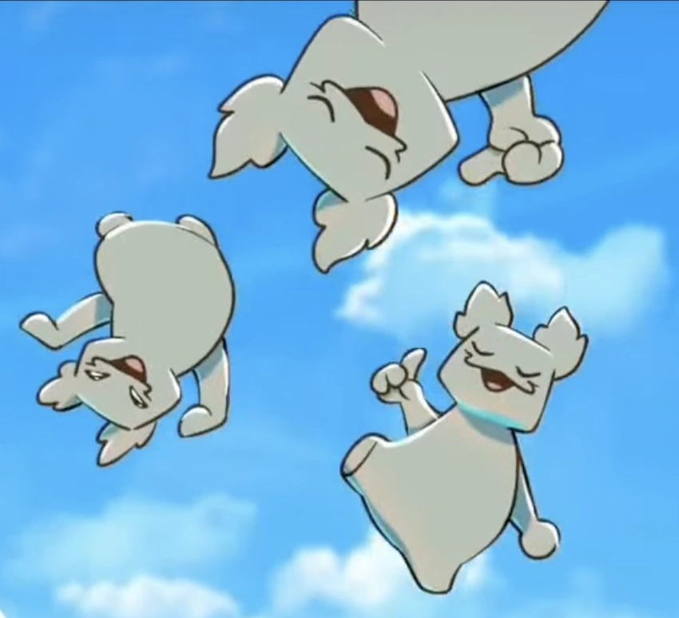

| Winions | |
|---|---|
|  | |
| Zeichnung von El_Crafts | |
| Biografie | |
| Spitznamen | Lotusesser |
| Beruf | Unruhestifter (variiert) |
| Familie | Winions |
| Status | Aktiv (variiert) |
| Hinter den Kulissen | |
| Auftritte | Troja Saga |
| Ozean Saga | |
| Vergeltungs Saga | |
| Original Stimme | Jorge Rivera-Herrans, Diana Rivera-Herrans (Prinzessin-Winion) |
| Deutsche Stimme | Michael Hinterlechner |
Winions
Die Winions sind eine Gruppe von kleinen, unruhestiftenden Kreaturen, die mehrere Auftritte im Musical haben.
Biografie
Akt 1
Die Winions tauchen zum ersten Mal in Off'ne Arme auf, als
Odysseus und Polites auf der Suche nach Nahrung für
ihre Armee sind. Obwohl sie den beiden Besuchern zunächst feindlich gesinnt zu sein scheinen, greifen sie
nicht an, als Odysseus sie bedroht, sondern bieten ihnen stattdessen Früchte auf ihrer Insel an, was Polites
als Beweis für die Wirksamkeit seiner Lebensweise ansieht. Odysseus bemerkt jedoch, dass es sich bei den
Früchten um leuchtende Lotusfrüchte handelt, die den Verstand kontrollieren (im offiziellen Animatic wird diese
Gruppe von Winions mit leuchtenden Augen in der Farbe der Lotusfrucht dargestellt). Polites fragt sie
daraufhin nach anderen Orten, an denen man Nahrung finden kann, und die Winions weisen Odysseus und seinen
Männern den Weg zur Insel von Poliphemus.
Die Winions haben einen weiteren Auftritt an der Seite von Aiolos in
Halt dir Freunde nah. In dem Song agieren sie als Aiolos'
Begleiter und tragen den Windbeutel mit Odysseus zurück auf das Schiff. Aus Bosheit geben sie den Männern des
Odysseus die falsche Information, dass der Beutel von Aiolos einen Schatz enthält, bevor sie verschwinden und
die Männer dazu verleiten, ihn zu öffnen und die Geister des Sturms freizulassen.
Akt 2
Die Winions treten neben Hermes im Song Gefährlich auf. In dem Song überreichen sie Odysseus den Windbeutel von Aiolos, der wiederum den Geist des Sturmes von Poseidon enthält. Zusammen mit Hermes warnen sie Odysseus davor, den Beutel nicht zu öffnen.
Auftritte
Trivia
- In der griechischen Mythologie herrschte Aiolos sowohl über die sanften als auch über die stürmischen Winde, wobei letztere unter Kontrolle gehalten werden mussten. Die Winions (Wind + Minions) könnten die Untertanen des Windgottes darstellen, die sowohl lieblich als auch gefährlich sind und große Entfernungen zurücklegen können (da sie auf mehreren Inseln leben).
-
Einige nennenswerte Winions sind: Gloob, Smumpus und der Prinzessin-Winion.
- Die Originalstimme vom Prinzessin-Winion ist Diana Rivera-Herrans, die Schwester von Jay.